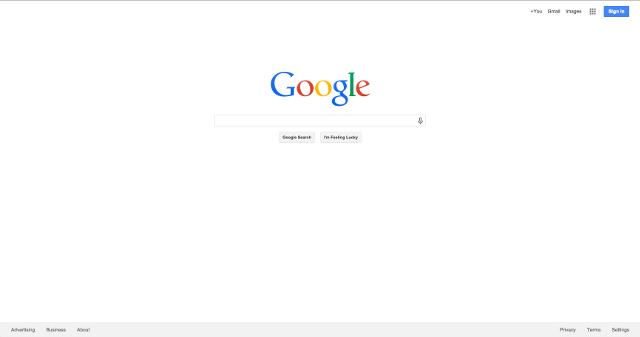
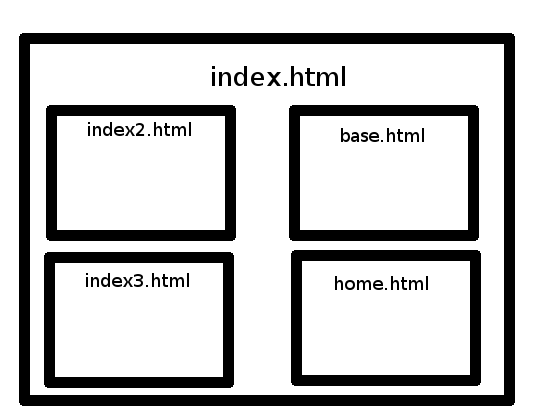
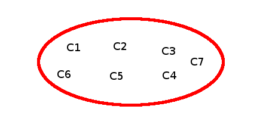
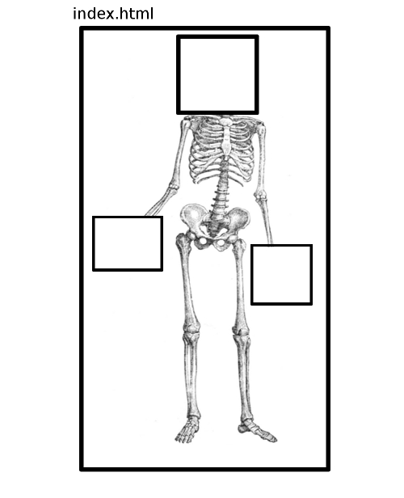
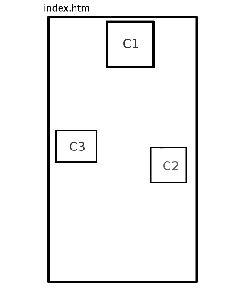
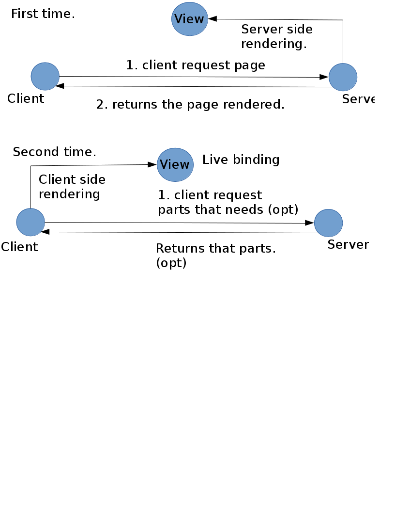
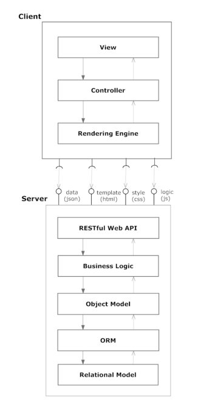
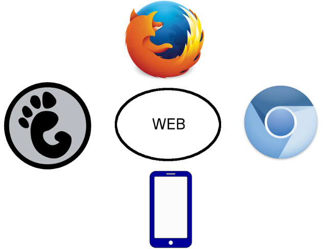

Your browser doesn't support impress.js. Try Chrome or Safari.
Camelug Web part 3 -
Client and server
WWW
I like you
Supervisor: Fabio Pagnotta

Part 1

Part 2
Part 3
18+
Web site

Single page application

Adv and disadv
Adv
- LRWYN -Load and render what you need
Disadv
- Web Spider
- Same page:No history
SSMVC: Main idea

SSMVC: Description
- Skeleton.
- Skeleton->View.
- View->Components
SSMVC: Components

SSMVC: Skeleton

"helloskeleton":{
"base":"view",
"targets":["P1","P2","P3"],
"tpl":["three-columns"],
"css":["three-columns-template"]
},
SSMVC: View

"helloview":{
"skeleton":"helloskeleton",
"components": ["C1","C2","C3"]
},
SSMVC: Components
- Css
- list of stylesheet
- Js
- javascript files,
- Lib
- javascript libraries that are load before the javascri,
- Tpl
template list,
- Event and Handlers
- association between event and handlers,
- Data
- the model
- MakeInstance
- the prototype that will be instanciate after the component creation.
SSMVC: Client side
- Mustache
- Handlebar
- Ractive (live binding)
SSMVC: Server side
SSMVC: Client side/Server side
SSMVC: in the Middle

SSMVC: Main problem of this solution:
Formatters
- Functions that are associated to the templates
Possible solution:
- Write once with javascript and execute it in the server side.( or viceversa )
- Rewrite any function twice.
SSMVC: SEO and History:
Main issues:
- Crawlers can't interpretate javascript
- How to refer to a specific resource?
Solution:
- Server side rendering
- using fragment: #a=1&b=2
But before going on... do you wanna a break?
SSMW: The other face of money
SSMW: features
- Aggregator: data,css,js
- Data: Webapi
- Template
- Language
SSMW: features

What's next?

Thanks for attentions